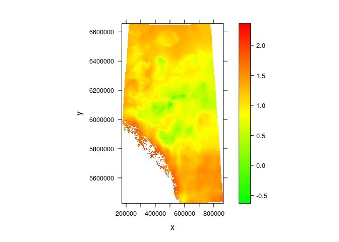

02 multivariate fundamentals
This is the lab 2 in the course renv 690 at the University of Alberta.
Videos for this lab are:
Matrix rotation in R
We are going to create a matrix with 3 variables and 10 rows with 0’s and 1’s values only:
data_points <- as.vector(sample(x = c(0, 1), size = 30, replace = TRUE))
dataset <- matrix(data_points, nrow = 10, ncol = 3)
Now, we are going to create a rotation matrix. First we need to create a formula to transform degrees to radians. Then, we are going to use this value to generate a rotation matrix:
# Degrees to radians
deg_to_rad <- function(deg) {
(deg * pi) / (180)
}
# Transform 30 degrees to radians
f2 <- deg_to_rad(30)
# Create the rotation matrix
## Rotation around z-axis
rotation_matrix <- matrix(c(cos(f2), sin(f2), 0,
-sin(f2), cos(f2), 0,
0, 0, 1 ),
nrow = 3, ncol = 3)
Finally, we are going to show how this matrix can look like in a plot with the original data points and the rotated data points:
rotation <- as.matrix(dataset) %*% as.matrix(rotation_matrix)
plot(dataset[ , 1], dataset[ , 2], xlim = c(-0.5, 1.5),
ylim = c(-0.5, 1.5), col = "blue")
points(rotation[ , 1], rotation[ , 2], col = "red")
Principal component analysis
For this example, we are going to use the dataset USArrests
arrests <- USArrests %>%
clean_names()
glimpse(arrests)
## Rows: 50
## Columns: 4
## $ murder [3m[38;5;246m<dbl>[39m[23m 13.2, 10.0, 8.1, 8.8, 9.0, 7.9, 3.3, 5.9, 15.4…
## $ assault [3m[38;5;246m<int>[39m[23m 236, 263, 294, 190, 276, 204, 110, 238, 335, 2…
## $ urban_pop [3m[38;5;246m<int>[39m[23m 58, 48, 80, 50, 91, 78, 77, 72, 80, 60, 83, 54…
## $ rape [3m[38;5;246m<dbl>[39m[23m 21.2, 44.5, 31.0, 19.5, 40.6, 38.7, 11.1, 15.8…
Now, we can run a PCA on this dataset
arrests_pca <- princomp(arrests, cor = T)
We have created an object with the results from the PCA. Let’s check the ouputs from the model:
arrests_pca$loadings
##
## Loadings:
## Comp.1 Comp.2 Comp.3 Comp.4
## murder 0.536 0.418 0.341 0.649
## assault 0.583 0.188 0.268 -0.743
## urban_pop 0.278 -0.873 0.378 0.134
## rape 0.543 -0.167 -0.818
##
## Comp.1 Comp.2 Comp.3 Comp.4
## SS loadings 1.00 1.00 1.00 1.00
## Proportion Var 0.25 0.25 0.25 0.25
## Cumulative Var 0.25 0.50 0.75 1.00
arrests_pca$score
## Comp.1 Comp.2 Comp.3 Comp.4
## Alabama 0.98556588 1.13339238 0.44426879 0.156267145
## Alaska 1.95013775 1.07321326 -2.04000333 -0.438583440
## Arizona 1.76316354 -0.74595678 -0.05478082 -0.834652924
## Arkansas -0.14142029 1.11979678 -0.11457369 -0.182810896
## California 2.52398013 -1.54293399 -0.59855680 -0.341996478
## Colorado 1.51456286 -0.98755509 -1.09500699 0.001464887
## Connecticut -1.35864746 -1.08892789 0.64325757 -0.118469414
## Delaware 0.04770931 -0.32535892 0.71863294 -0.881977637
## Florida 3.01304227 0.03922851 0.57682949 -0.096284752
## Georgia 1.63928304 1.27894240 0.34246008 1.076796812
## Hawaii -0.91265715 -1.57046001 -0.05078189 0.902806864
## Idaho -1.63979985 0.21097292 -0.25980134 -0.499104101
## Illinois 1.37891072 -0.68184119 0.67749564 -0.122021292
## Indiana -0.50546136 -0.15156254 -0.22805484 0.424665700
## Iowa -2.25364607 -0.10405407 -0.16456432 0.017555916
## Kansas -0.79688112 -0.27016470 -0.02555331 0.206496428
## Kentucky -0.75085907 0.95844029 0.02836942 0.670556671
## Louisiana 1.56481798 0.87105466 0.78348036 0.454728038
## Maine -2.39682949 0.37639158 0.06568239 -0.330459817
## Maryland 1.76336939 0.42765519 0.15725013 -0.559069521
## Massachusetts -0.48616629 -1.47449650 0.60949748 -0.179598963
## Michigan 2.10844115 -0.15539682 -0.38486858 0.102372019
## Minnesota -1.69268181 -0.63226125 -0.15307043 0.067316885
## Mississippi 0.99649446 2.39379599 0.74080840 0.215508013
## Missouri 0.69678733 -0.26335479 -0.37744383 0.225824461
## Montana -1.18545191 0.53687437 -0.24688932 0.123742227
## Nebraska -1.26563654 -0.19395373 -0.17557391 0.015892888
## Nevada 2.87439454 -0.77560020 -1.16338049 0.314515476
## New Hampshire -2.38391541 -0.01808229 -0.03685539 -0.033137338
## New Jersey 0.18156611 -1.44950571 0.76445355 0.243382700
## New Mexico 1.98002375 0.14284878 -0.18369218 -0.339533597
## New York 1.68257738 -0.82318414 0.64307509 -0.013484369
## North Carolina 1.12337861 2.22800338 0.86357179 -0.954381667
## North Dakota -2.99222562 0.59911882 -0.30127728 -0.253987327
## Ohio -0.22596542 -0.74223824 0.03113912 0.473915911
## Oklahoma -0.31178286 -0.28785421 0.01530979 0.010332321
## Oregon 0.05912208 -0.54141145 -0.93983298 -0.237780688
## Pennsylvania -0.88841582 -0.57110035 0.40062871 0.359061124
## Rhode Island -0.86377206 -1.49197842 1.36994570 -0.613569430
## South Carolina 1.32072380 1.93340466 0.30053779 -0.131466685
## South Dakota -1.98777484 0.82334324 -0.38929333 -0.109571764
## Tennessee 0.99974168 0.86025130 -0.18808295 0.652864291
## Texas 1.35513821 -0.41248082 0.49206886 0.643195491
## Utah -0.55056526 -1.47150461 -0.29372804 -0.082314047
## Vermont -2.80141174 1.40228806 -0.84126309 -0.144889914
## Virginia -0.09633491 0.19973529 -0.01171254 0.211370813
## Washington -0.21690338 -0.97012418 -0.62487094 -0.220847793
## West Virginia -2.10858541 1.42484670 -0.10477467 0.131908831
## Wisconsin -2.07971417 -0.61126862 0.13886500 0.184103743
## Wyoming -0.62942666 0.32101297 0.24065923 -0.166651801
summary(arrests_pca)
## Importance of components:
## Comp.1 Comp.2 Comp.3 Comp.4
## Standard deviation 1.5748783 0.9948694 0.5971291 0.41644938
## Proportion of Variance 0.6200604 0.2474413 0.0891408 0.04335752
## Cumulative Proportion 0.6200604 0.8675017 0.9566425 1.00000000
eigen(cor(arrests))
## eigen() decomposition
## $values
## [1] 2.4802416 0.9897652 0.3565632 0.1734301
##
## $vectors
## [,1] [,2] [,3] [,4]
## [1,] -0.5358995 0.4181809 -0.3412327 0.64922780
## [2,] -0.5831836 0.1879856 -0.2681484 -0.74340748
## [3,] -0.2781909 -0.8728062 -0.3780158 0.13387773
## [4,] -0.5434321 -0.1673186 0.8177779 0.08902432
eigen(cor(arrests))$values/4
## [1] 0.62006039 0.24744129 0.08914080 0.04335752
Finally we can create a biplot of our model:
biplot(arrests_pca, choices = c(1, 2))
PCA for spatial dataset
Read the data
alberta_climate <- read_csv("data/lab_2/ab_climate.csv") %>%
clean_names() %>%
mutate(ecosys = as.factor(ecosys))
## Rows: 40229 Columns: 18
## ── Column specification ──────────────────────────────────────────
## Delimiter: ","
## chr (1): ECOSYS
## dbl (17): ID, X, Y, ELEVATION, MAT, MWMT, MCMT, TD, MAP, MSP, ...
##
## ℹ Use `spec()` to retrieve the full column specification for this data.
## ℹ Specify the column types or set `show_col_types = FALSE` to quiet this message.
glimpse(alberta_climate)
## Rows: 40,229
## Columns: 18
## $ id [3m[38;5;246m<dbl>[39m[23m 4957, 4961, 4965, 4969, 4973, 4977, 4981, 4985…
## $ x [3m[38;5;246m<dbl>[39m[23m 224500, 228500, 232500, 236500, 240500, 244500…
## $ y [3m[38;5;246m<dbl>[39m[23m 6655500, 6655500, 6655500, 6655500, 6655500, 6…
## $ elevation [3m[38;5;246m<dbl>[39m[23m 334, 354, 377, 417, 458, 433, 454, 502, 544, 5…
## $ ecosys [3m[38;5;246m<fct>[39m[23m NM, NM, NM, NM, NM, NM, NM, NM, NM, NM, NM, NM…
## $ mat [3m[38;5;246m<dbl>[39m[23m -2.6, -2.6, -2.7, -2.7, -2.8, -2.9, -2.9, -3.1…
## $ mwmt [3m[38;5;246m<dbl>[39m[23m 16.0, 15.9, 15.8, 15.6, 15.4, 15.5, 15.4, 15.2…
## $ mcmt [3m[38;5;246m<dbl>[39m[23m -24.2, -24.2, -24.1, -24.0, -23.8, -24.2, -24.…
## $ td [3m[38;5;246m<dbl>[39m[23m 40.2, 40.1, 39.9, 39.6, 39.2, 39.7, 39.4, 39.2…
## $ map [3m[38;5;246m<dbl>[39m[23m 402, 405, 410, 415, 422, 420, 420, 434, 443, 4…
## $ msp [3m[38;5;246m<dbl>[39m[23m 246, 248, 249, 251, 254, 252, 251, 257, 262, 2…
## $ ahm [3m[38;5;246m<dbl>[39m[23m 18.5, 18.3, 17.9, 17.5, 17.0, 17.0, 17.0, 16.0…
## $ shm [3m[38;5;246m<dbl>[39m[23m 65.0, 64.1, 63.6, 62.1, 60.6, 61.5, 61.3, 59.0…
## $ dd0 [3m[38;5;246m<dbl>[39m[23m 3073, 3075, 3077, 3082, 3078, 3116, 3105, 3138…
## $ dd5 [3m[38;5;246m<dbl>[39m[23m 1194, 1180, 1161, 1132, 1099, 1118, 1100, 1064…
## $ nffd [3m[38;5;246m<dbl>[39m[23m 139, 139, 139, 139, 138, 138, 138, 137, 137, 1…
## $ ffp [3m[38;5;246m<dbl>[39m[23m 81, 81, 80, 80, 79, 80, 79, 79, 77, 77, 76, 76…
## $ pas [3m[38;5;246m<dbl>[39m[23m 150, 151, 155, 158, 163, 162, 163, 171, 176, 1…
Plot the data
temp_colors <- colorRampPalette(c("blue", "lightblue", "yellow", "red"))(100)
levelplot(mat ~ x * y,
data = alberta_climate,
aspect = "iso", cuts = 99, col.regions = temp_colors)
p_colors = colorRampPalette(c("brown", "yellow",
"darkgreen", "darkblue"))(100)
levelplot(log(map) ~ x * y,
data = alberta_climate,
aspect = "iso", cuts = 99,
col.regions = p_colors)
# Try with ggplot
ggplot(data = alberta_climate, aes(x = x, y = y, fill = log(map))) +
geom_tile() +
scale_fill_viridis_c()
levelplot(ecosys ~ x * y,
data = alberta_climate,
aspect = "iso", cuts = 20,
col.regions = rainbow(21))
# Try with ggplot
ggplot(data = alberta_climate, aes(x = x, y = y, fill = ecosys)) +
geom_tile() +
scale_fill_viridis_d()
Perform a PCA
alberta_pca <- alberta_climate %>%
select(-id, -x, -y, -elevation, -ecosys) %>%
princomp(cor = TRUE)
# Plots with lab_2 original code
plot(alberta_pca$score[, 1:2], cex = 0.3, asp = 1,
col = rainbow(21)[alberta_climate$ecosys])
legend(9 ~ -12.5, cex = 0.8, bty = "n", pch = c(16),
col = rainbow(21), legend = sort(unique(alberta_climate$ecosys)))
Now that we have the plot, we are missing the labels, so we can add them
with help from the vegan package functions
# This is with all the variables used to create the PCA
alberta_pca_fit <- envfit(alberta_pca$score[ , 1:2],
alberta_climate[ , 6:18], permutations = 0)
plot.new()
plot(alberta_pca_fit, col = "black")
# This is selecting just 3 variables
alberta_pca_fit <- envfit(alberta_pca$score[ , 1:2],
alberta_climate[ , c(7, 9, 18)], permutations = 0)
plot.new()
plot(alberta_pca_fit)
# Now plot this with the map
alberta_pca$loadings[,1:3]
## Comp.1 Comp.2 Comp.3
## mat 0.21210671 0.39145994 0.06792576
## mwmt 0.36495614 -0.08275149 -0.06940002
## mcmt 0.05824430 0.46271104 0.17333034
## td 0.05842535 -0.46062662 -0.18440228
## map -0.30665384 0.23732282 -0.14770200
## msp -0.24004368 0.27607364 -0.47237020
## ahm 0.34256560 0.13247143 0.28589935
## shm 0.30488045 -0.19434047 0.38961587
## dd0 -0.09947894 -0.45405333 -0.13896027
## dd5 0.37166314 0.03706038 -0.07360775
## nffd 0.32318246 0.12648793 -0.37484355
## ffp 0.32168430 0.03329113 -0.46840749
## pas -0.31159874 0.03364299 0.25177840
pccol <- colorRampPalette(c("green", "yellow", "red"))(100)
levelplot(alberta_pca$score[, 1] ~ x * y,
data = alberta_climate,
aspect = "iso", cuts = 99,
col.regions = pccol)
levelplot(alberta_pca$score[, 2] ~ x * y,
data = alberta_climate,
aspect = "iso", cuts = 99,
col.regions = pccol)
levelplot(log(alberta_pca$score[, 3] + 3) ~ x * y,
data = alberta_climate,
aspect = "iso", cuts = 99,
col.regions = pccol)

PCA with tidymodels
That’s a way to do it, but nowadays we can perform the same exact
process with tools like tidymodels
Creating test and training data
set.seed(1701)
alberta_split <- alberta_climate %>%
select(-id, -x, -y, -elevation) %>%
initial_split(strata = ecosys, prop = 3/4)
alberta_train <- training(alberta_split)
alberta_test <- testing(alberta_split)
set.seed(1702)
alberta_val <- validation_split(alberta_train, strata = ecosys, prop = 4/5)
alberta_val$splits[[1]]
## <Training/Validation/Total>
## <24136/6035/30171>
Exploring the data
Let’s check the correlation between the variables
tmwr_cols <- colorRampPalette(c("#91CBD765", "#CA225E"))
alberta_train %>%
select(-ecosys) %>%
cor() %>%
corrplot(col = tmwr_cols(200), tl.col = "black")
Do we have missing values?
vis_dat(alberta_train)
Creating recipe
This dataset contains predictors that are ratios. Given the nature of this variable, the distribution can be skewed and wreak the havoc on variance calculations. That’s why is better to normalize (enforce a symmetric distribution) for the predictors
alberta_recipe <- recipe(ecosys ~ .,
data = analysis(alberta_val$splits[[1]])) %>%
update_role(ecosys,
new_role = "id") %>%
step_zv(all_numeric_predictors()) %>%
step_orderNorm(all_numeric_predictors()) %>%
step_normalize(all_predictors())
Estimate model with the training data
alberta_rec_trained <- prep(alberta_recipe)
alberta_rec_trained
## Recipe
##
## Inputs:
##
## role #variables
## id 1
## predictor 13
##
## Training data contained 24136 data points and no missing data.
##
## Operations:
##
## Zero variance filter removed no terms [trained]
## orderNorm transformation on mat, mwmt, mcmt, td, map, ms... [trained]
## Centering and scaling for mat, mwmt, mcmt, td, map, msp, ah... [trained]
If we are facing errors we can use:
prep(verbose = TRUE)this will show the errors in every stepprep(log_changes = TRUE)will keep the logs for every step
Baking the recipe
bake() is like predict(), so at this point we have just fit our
model, now we need to predict.
alberta_validation <- alberta_val$splits %>%
pluck(1) %>%
assessment()
alberta_val_processed <- bake(alberta_rec_trained,
new_data = alberta_validation)
Feature extraction techniques
We are going to create a function to plot the data in a scatter plot. After running the PCA, we will use this function.
plot_validation_results <- function(recipe,
dat = assessment(alberta_val$splits[[1]])) {
recipe %>%
# Estimate any additional steps
prep() %>%
# Process the data (the validation set by default)
bake(new_data = dat) %>%
# Create the scatterplot matrix
ggplot(aes(x = .panel_x, y = .panel_y, col = ecosys, fill = ecosys)) +
geom_point(alpha = 0.4, size = 0.5) +
geom_autodensity(alpha = .3) +
facet_matrix(vars(-ecosys), layer.diag = 2) +
scale_color_viridis_d() +
scale_fill_viridis_d()
}
Now, we are going to add one more step to our recipe to check the variation of our variables and visualize it with our function:
alberta_rec_trained %>%
step_pca(all_numeric_predictors(), num_comp = 4) %>%
plot_validation_results() +
ggtitle("Principal Component Analysis")
We can observe that the first two principal components are good separating the classes.
Now, the PCA components of our data that explain most of the variation in the predictors are also the predictive of the classes. To get to know what features are driving each of the components we can do the following:
alberta_rec_trained %>%
step_pca(all_numeric_predictors(), num_comp = 4) %>%
prep() %>%
plot_top_loadings(component_number <= 4, n = 5) +
ggtitle("Principal Component Analysis")
PCA with tidymodels without the split
# Create recipe indicating the role of variables that are there to identify
# data points:
alberta_recipe <- recipe(~ ., data = alberta_climate) %>%
update_role(id, x, y, elevation, ecosys,
new_role = "id") %>%
step_normalize(all_predictors()) %>%
step_pca(all_predictors())
# Up to this point we just created the recipe. Nothing was executed by R. So the
# next step is to run the recipe
alberta_preparation <- prep(alberta_recipe)
# Now, we can extract all the results in a tidy format
alberta_pca_tidy <- tidy(alberta_preparation, 2)
# Let's check the variable importance for each of the components:
alberta_pca_tidy %>%
filter(component %in% paste0("PC", 1:3)) %>%
mutate(component = fct_inorder(component)) %>%
ggplot(aes(value, terms, fill = terms)) +
geom_col(show.legend = FALSE) +
facet_wrap( ~ component, nrow = 1) +
labs(y ~ NULL)
# We can try to plot the datapoints with the components
bake(alberta_preparation, new_data = NULL) %>%
ggplot(aes(PC1, PC2)) +
geom_point(aes(color = ecosys), alpha = 0.7, size = 2) +
scale_color_viridis_d()